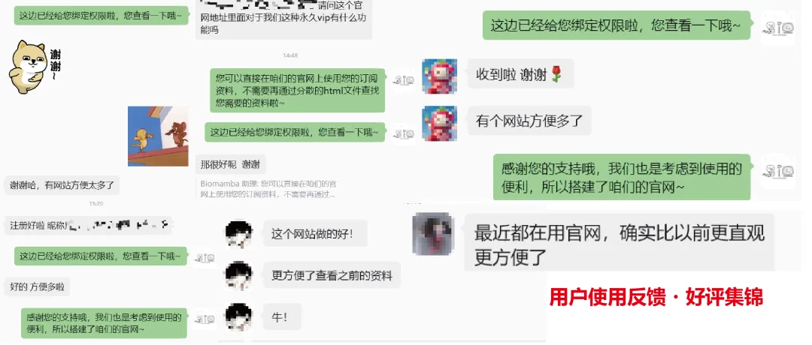
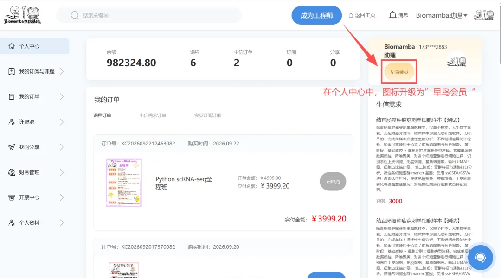
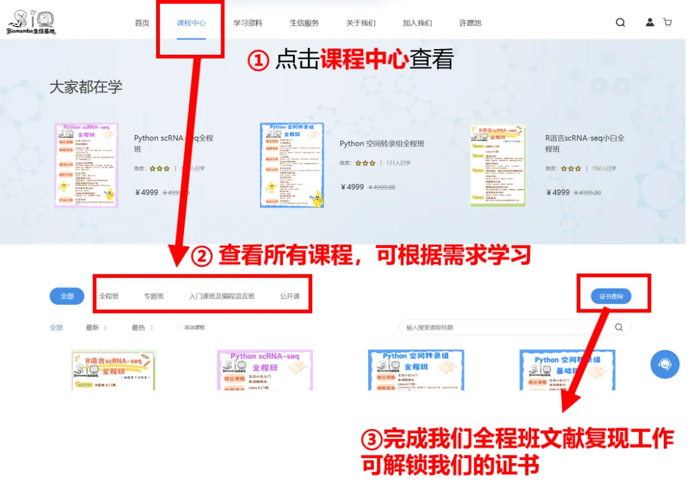
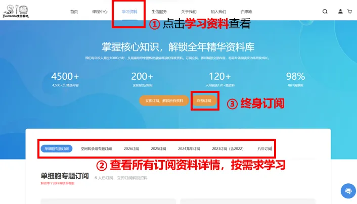
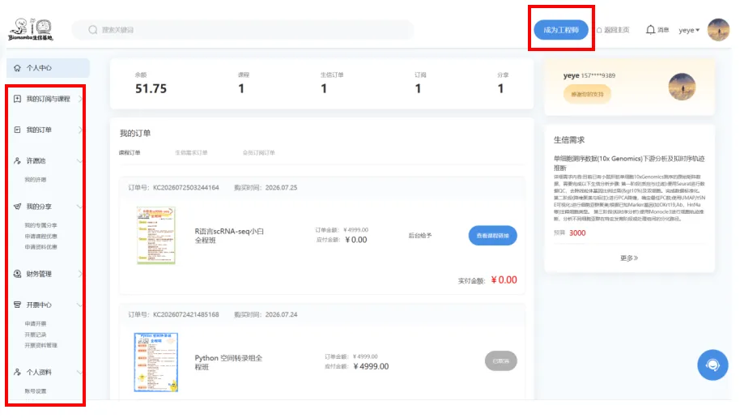

千呼万唤，Biomamba生信基地【官网】正式上线！
原文：https://mp.weixin.qq.com/s?__biz=MzAwMzIzOTk5OQ==&mid=2247542607&idx=1&sn=0c81370dcb19a6c94d426ca3ea48f741&chksm=9b3c5e1fac4bd709a8535e26a99de4fc45cc5a2a713cb87832e56e332585126f2a74b6bcd27a#rd 合集：生信基地

官网终于和大家正式见面啦~

且看且珍惜，现在生态太封闭了，公众号内容传播受限，那就整一个生信人自己的交流平台：www.biomamba.cn 。上次征集大家帮忙排查官网bug后，我们持续迭代打磨，经过多轮调试优化，Biomamba生信基地 官网正式上线啦！ 欢迎访问我们的专属域名：www.biomamba.cn

这段时间收到了很多小伙伴的好评！当然若在使用过程中遇到问题，或是有任何批评、建议，欢迎联系客服[Biomamba_zhushou]向我们反馈，可领取生信基地精美周边一份。我们搭建官网的初衷，是将课程、学习资料、科研服务、许愿池等板块整合打通。让大家无需在收藏夹中查找大量分散链接，还可自主发布科研需求与愿望，助力大家高效开展生信学习，快速解决科研难题。本次官网正式上线有专属福利活动哦~，大家记得下滑查看，不要错过了~——Biomamba官网介绍，欢迎注册和登录
上线 · 回馈 | 注册有福利哦~
** **
为答谢广大生信小伙伴们一路以来的支持，上线专属回馈活动正式开始啦~
1
参与方式
浏览器搜索： https://biomamba.cn/，注册并成功实名认证，即为有效注册PS：如果实名认证未成功，联系客服[ Biomamba_zhushou]协助完成注册~
2
活动内容
①福利1 | 课程 &资料全场八折
注册成功后，可前往课程中心与学习资料板块挑选所需学习内容，加入购物车并完成付款，即可解锁课程/资料~
②福利2 | 早鸟会员：推荐金比例由5%升级为10%
在个人中心-我的分享-我的专属分享，获取链接/二维码转发。新用户通过你的分享完成注册，你即可成为一级代理，TA后续所有消费，你都可获得实付金额10%的提成。活动期间内升级权益，联系客服[Biomamba_zhushou]办理即可。

PS：以上操作详情可向下翻阅哦~
3
活动时间
即日起-2026年10月15日
机不可失，失不再来~
**
**
官网能为你做什么？
**
**
** **
一、课程中心
通过 https://biomamba.cn/成功注册登录之后，在导航栏点击[课程中心]，所有课程都在这里：

** **
主要分两类：**· 培训课程 ：全程班、专题班、生信入门课和编程语言班(R语言入门课、Python入门课)购买后享 三年答疑服务，全程班和专题班额外赠送三个月服务器免费使用。完成全程班文献复现，可解锁认证证书。凭此证书可申请成为工程师哦~ ****· 公开课程 ：生信小白的Linux保姆级教程、SeekSoul Online单细胞云平台、单细胞多组学全家桶（scFAST单细胞全长转录组、scATAC单细胞染色质可及性、SeekSpace单细胞空间转录组、单细胞甲基化），视频免费观看地址可直接在课程详情页获取。
**
****· 公开课程 ：生信小白的Linux保姆级教程、SeekSoul Online单细胞云平台、单细胞多组学全家桶（scFAST单细胞全长转录组、scATAC单细胞染色质可及性、SeekSpace单细胞空间转录组、单细胞甲基化），视频免费观看地址可直接在课程详情页获取。
**
** **
**如何获取课程？****单个购买： 课程中心→点击感兴趣的课程→了解课程内容和权益（免费试听）→点击立即购买→立即支付，支付成功后在右上角的个人中心→我的订阅与课程→我的课程→查看课程链接，可解锁全部内容；****多个购买： 课程中心→点击感兴趣的课程→了解课程内容和权益（免费试听）→加入购物车→点击右上角购物车→点击我的课程→去结算→立即支付，支付成功后在个人中心→我的订阅与课程→我的课程→查看课程链接，可解锁全部内容；公开课： 点击感兴趣的课程→课程详情页获取视频链接地址。 **视频演示
二、学习资料
除了课程，我们还有资料订阅 功能：

目前共四种 订阅类型：· 终身订阅：解锁所有资料，后续资料也会自动更新；· 专题订阅 ：单细胞专题订阅、空间转录组专题订阅；· 八年订阅 ：覆盖2022-2029年；· 年份订阅 ：2023订阅（含2022）、2024龙年订阅、2025订阅、2026订阅，未来也将持续更新，可按年购买，持续订阅有优惠哦~ 如何获取资料？ 单个购买：学习资料→点击感兴趣订阅资料→了解资料详情（有原文链接，部分资料还有视频讲解）→滑至底部点击立即购买→立即支付，支付成功后在个人中心→我的订阅与课程→会员订阅→查看订阅资料全部内容；多个购买：学习资料→点击感兴趣订阅资料→了解资料详情（有原文链接，部分资料还有视频讲解）→滑至底部点击加入订阅栏→点击右上角购物车→点击我的订阅→点击去结算→立即支付，支付成功后在个人中心→我的订阅与课程→会员订阅→查看订阅资料全部内容；终身订阅：学习资料→点击"终身订阅"，一键解锁所有资料。 视频演示三、生信服务
生信服务板块包含三个 内容：· 需求发布 ：用户根据自身需求发布内容；· 接单大厅 ：展示用户需求、工程师在线接单；· 工程师信息 ：展示工程师项目经历、技能标签等背景信息 用户怎么用？
需求发布→等待工程师接单（在接单大厅展示）→右上角个人中心→我的订单→生信需求订单→需求概览→“待支付”支付预算→项目确认→确认工程师并开始项目→工程师按批次提交资料→用户逐一确认→项目结束。（PS：可等工程师接单再支付需求预算哦~）
项目开始之后，双方可随时在平台内沟通交流；待用户确认全部内容、项目正式结束后，双方沟通通道将关闭。PS：平台全程监督流程，切实保障供需双方合法权益。
两个关键节点需要特别说一下：· 支付节点 ：用户确认工程师并开始项目前需支付全部预算金额；· 灵活调整 ：①工程师未接单前，需求均可以修改（个人中心→我的订单→生信需求订单→找到对应的稿件修改即可）；②选定工程师默认项目开始，期间均可在个人中心→我的订单→生信需求订单→稿件的参考详情→项目确认和工程师交流和沟通项目。期间需要帮助均可联系右下角客服~ 视频演示
工程师怎么用？
第一步，申请成为工程师：个人中心→申请“成为工程师”→上传资质→等待平台审核→审核通过成为工程师；
第二步，了解接单流程：接单大厅→报名参与用户需求→提交保证金→等待用户确认和开始→按批次提交资料→用户逐一确认→项目结束。
保证金退回要点：
①报名参与用户需求且在用户未确认前可随时取消，保证金可退回；
②报名且用户确认项目开始后，完成所有阶段的内容并且用户逐一所有阶段确认后，保证金可退回；
③保证金退回流程：个人中心→财务管理→账户余额→可退保证金→退回至可用余额中。
视频演示
四、许愿池
除了课程、 资料、科研服务*这些板块，我们还专门留了一个给用户发声* 的渠道——许愿池。目的很简单：你想要的课程、你需要的资料、你觉得平台还缺什么，都可以在这里提。我们特别看重呼声高 的愿望，会想办法逐一实现。
怎么许愿？ 进入许愿池→点击“我要许愿”→填写愿望内容（文字描述+图片/资料上传，支持匿名展示）→提交 愿望状态怎么跟踪？ 提交后可在个人中心→许愿池→我的许愿，查看愿望进度，已受理：我们在筹备你的愿望内容；已实现：你的愿望已上线。
愿望状态怎么跟踪？ 提交后可在个人中心→许愿池→我的许愿，查看愿望进度，已受理：我们在筹备你的愿望内容；已实现：你的愿望已上线。
视频演示
五、个人中心
成功购买课程和资料后，去哪里查看？答案都在个人中心。

个人中心包含以下板块：· 我的订阅与课程 ：已购买的所有课程和订阅资料，集中管理；· 我的订单 ：所有创建的订单记录，随时可查；· 许愿池 ：自己提交的愿望及当前状态（已受理/已实现）；· 我的分享 ：专属分享链接，新用户通过你的分享完成注册，你即可成为一级代理，TA后续所有消费，你都可获得实付金额5%的提成；· 财务管理 ：账户余额、提现、消费明细；· 开票中心 ：申请开票、开票记录、开票资料管理；· 个人资料 ：账号设置、基本信息、实名认证、注销账号 另外，想成为平台工程师接单赚钱的，也欢迎在个人中心提交资料申请，审核通过即可入驻。视频演示